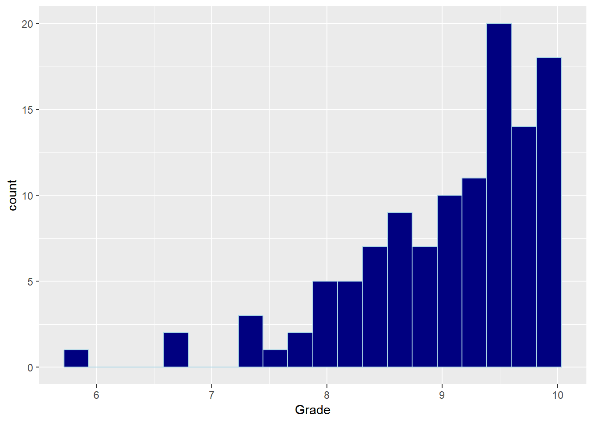
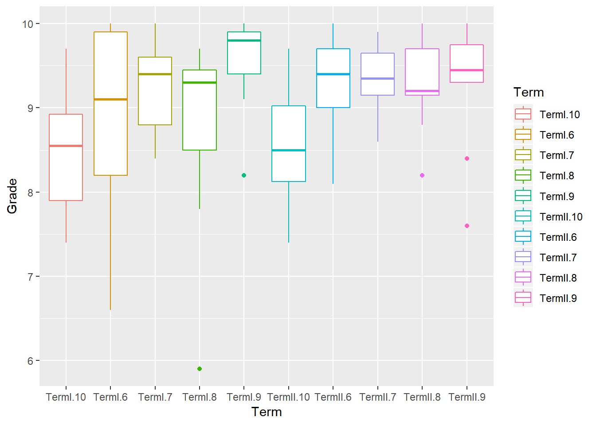
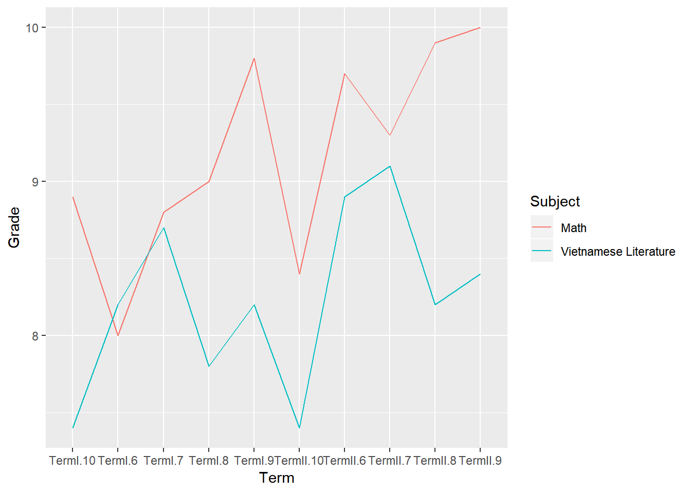

6 Part II - Grades
6.1 Introduction
6.1.1 Topic
Grades seems to be a lame topic, but wouldn’t it be fun to look at all of your grades from middle school to high school? And that’s what this analysis is all about. I’m going to take a look back at my grades from 6th to 10th grade (my time back in Vietnam). I think this is also a good opportunity for me to look at what I have accomplished and how I have improved as a learner during those years.
6.1.2 Data
It is easy for me to collect the data because I brought my middle school and high school transcipt with me. I created 5 separate excel files. They are my 6th, 7th, 8th, 9th and 10th Grade’s grades (my “Vietnamese grades”). Each one the 5 dataset is in the wide format and has 3 variables:
Subject: The classes that I took in those years
My Term I grade
My Term II grade
The grades are my semester average grades for each one of the subject and in Vietnam, we use a 10-point grading scale.
6.2 Analysis
As always, I loaded the following R packages before making my data analysis
library(tidyverse)
library(readxl)
library(knitr)
library(mosaic)6.2.1 Data Wrangling
Since I wanted to import 5 of my Vietnamese grades’ files, it’s a good idea not to repeat the same importing process and so I write a function to capture this process. I named the function “Grades”
Grades <- function(grade){
GradesFile <- paste("~/Data229/Project/Grades/Q_Grades_VN_", grade, "thGrade.xlsx" ,sep = "")
GradesTable <- read_excel(GradesFile)
}Now after creating my function, I can just simply get the tables of my grades in 6th, 7th, 8th , 9th and 10th Grade.
Grade6 <- Grades(6)
Grade7 <- Grades(7)
Grade8 <- Grades(8)
Grade9 <- Grades(9)
Grade10 <- Grades(10)Ultimately, my goal is to have a table in a narrow (tall) format with 3 variables: Subject, Term and Grade. So I first used 4 full_join’s to create a table in a wide format. I also renamed the all the term columns.
GradeVN <- Grade6 %>%
full_join(Grade7, by = "Subject") %>%
full_join(Grade8, by = "Subject") %>%
full_join(Grade9, by = "Subject") %>%
full_join(Grade10, by = "Subject")
colnames(GradeVN) <- c("Subject", "TermI.6", "TermII.6", "TermI.7", "TermII.7", "TermI.8", "TermII.8", "TermI.9", "TermII.9", "TermI.10", "TermII.10")After that, I used the gather() function to get all of my grades in a single column.
GradeVN <- GradeVN %>%
gather("TermI.6", "TermII.6", "TermI.7", "TermII.7", "TermI.8", "TermII.8", "TermI.9", "TermII.9", "TermI.10", "TermII.10", key = "Term", value = "Grade")Finally, to make my job easier, I got rid of all of my “S” grades as well as all the missing cells in the final table.
GradeVN <- GradeVN %>%
filter(Grade != "S", !is.na(Grade))
GradeVN$Grade <- as.double(GradeVN$Grade)Here’s a look at my final table
kable(GradeVN %>% head())| Subject | Term | Grade |
|---|---|---|
| Math | TermI.6 | 8.0 |
| Physics | TermI.6 | 6.7 |
| Biology | TermI.6 | 9.8 |
| Vietnamese Literature | TermI.6 | 8.2 |
| History | TermI.6 | 9.9 |
| Geography | TermI.6 | 8.7 |
6.2.2 Data Exploring
First, let’s take a look at the distribution for my grades. Below are the visual and numerical summaries for this distribution:
GradeVN %>%
ggplot(mapping = aes(Grade)) +
geom_histogram(bins = 20, fill = "navy", color = "lightblue")
kable(favstats(~ Grade, data = GradeVN))| min | Q1 | median | Q3 | max | mean | sd | n | missing | |
|---|---|---|---|---|---|---|---|---|---|
| 5.9 | 8.6 | 9.3 | 9.7 | 10 | 9.054783 | 0.8090761 | 115 | 0 |
The distribution of my grades from 6th to 10th is skewed to the left, meaning that I tend to get higher grades during those 5 school years. My average (mean) grade is 9.05, and the grade median is 9.3, meaning that half of my grades are greater than 9.3, and the other half is less than 9.3. The lowest grade I had during that time was 5.9, whereas my highest one was a perfect grade (10). That 5.9 grade can be an outlier to this distribution.
6.2.2.1 Grade Frequency
Which grades did I get the most and the least during the period of 6th to 10th grade? We’ll about to find out…
kable(GradeVN %>%
group_by(Grade) %>%
summarise(Frequency = n()) %>%
arrange(desc(Frequency)) %>%
head())| Grade | Frequency |
|---|---|
| 9.9 | 11 |
| 9.4 | 10 |
| 9.7 | 8 |
| 9.3 | 7 |
| 10.0 | 7 |
| 9.1 | 6 |
kable(GradeVN %>%
group_by(Grade) %>%
summarise(Frequency = n()) %>%
arrange((Frequency)) %>%
head())| Grade | Frequency |
|---|---|
| 5.9 | 1 |
| 6.6 | 1 |
| 6.7 | 1 |
| 7.6 | 1 |
| 8.1 | 1 |
| 7.8 | 2 |
My most popular grade was 9.9, whereas 9.4 came in second place with just 1 less appearance. All of my top grades were all above 9 (90%), and a perfect score (10.0) also made the top list. On the other hand, there were 5 grades that I only got each one of them once (5.9, 6.6, 6.7, 7.6, 8.1, 7.8). They were all close to 8 or below that.
6.2.2.2 Semester Average
To find my average grade for each semester, I first find the cells corresponding to the each one of the term and then take the mean of column “Grade” of those cells. I put everything in a table in a narrow format with 3 variables Grade, Term and Average
AverageGrade <- tribble(
~Grade,~Term, ~Average,
6, "I", mean(GradeVN[1:13,3]$Grade),
6, "II", mean(GradeVN[14:26,3]$Grade),
7, "I", mean(GradeVN[27:39,3]$Grade),
7, "II", mean(GradeVN[39:49,3]$Grade),
8, "I", mean(GradeVN[50:60,3]$Grade),
8, "II", mean(GradeVN[61:71,3]$Grade),
9, "I", mean(GradeVN[72:81,3]$Grade),
9, "II", mean(GradeVN[82:91,3]$Grade),
10, "I", mean(GradeVN[92:103,3]$Grade),
10, "II", mean(GradeVN[104:115,3]$Grade)
)Here’s a look at the table that I just created.
kable(AverageGrade)| Grade | Term | Average |
|---|---|---|
| 6 | I | 8.838461 |
| 6 | II | 9.338461 |
| 7 | I | 9.200000 |
| 7 | II | 9.372727 |
| 8 | I | 8.781818 |
| 8 | II | 9.318182 |
| 9 | I | 9.550000 |
| 9 | II | 9.280000 |
| 10 | I | 8.458333 |
| 10 | II | 8.591667 |
I also made a boxplot to compare my grades throughout the semesters:
GradeVN %>%
ggplot(mapping = aes(x = Term, y = Grade, color = Term)) +
geom_boxplot()
My highest semester average was Term I of 9th Grade, where I had a 9.6 overall average; whereas the term that I received the lowest grade average was Term I of 10th Grade, where I got an average of 8.5. All of my semester averages were greater than or equal to 8.5, and there were 6 semesters where I had an average above 9. The are some outliers in TermI.8, TermI.9, TermII.8 and TermII.9.
6.2.2.3 Math vs Literature
In Vietnam, the 2 most important subject are Math and Vietnamese Literature. So I wanted to look at how well I did in those 2 classes throughout the years.
Using my final Grade table, I created a table called “MathLit” by filtering out every subject but Math and Vietnamese Literature. Here’s a look at the first few rows of my new table:
MathLit <- GradeVN %>%
filter(Subject %in% c("Math","Vietnamese Literature"))
kable(MathLit %>% head())| Subject | Term | Grade |
|---|---|---|
| Math | TermI.6 | 8.0 |
| Vietnamese Literature | TermI.6 | 8.2 |
| Math | TermII.6 | 9.7 |
| Vietnamese Literature | TermII.6 | 8.9 |
| Math | TermI.7 | 8.8 |
| Vietnamese Literature | TermI.7 | 8.7 |
Then I made this graph to compare my Math and Literature Grades
MathLit %>%
ggplot() +
geom_line(mapping = aes(x = Term, y = Grade, group = Subject, color = Subject))
Overall, I had higher grade in Math than Literature in every semester but the first term of 6th grade. My lowest Math grade was an 8.0 in Term I.6; whereas my highest grade for this class is 10.0 in my second semester of 9th grade. For Literature, the 2 semester where I had the lowest grade were term 1 and 2 of 10th grade, where my grades were both slightly less than 7.5. My highest Lit semester grade was TermII.7 where I received a grade slightly above 9. The difference in Math and Lit grades were the greatest in TermI.9 and TermII.9, as my Math grades were about 1.5 points higher than Literature.